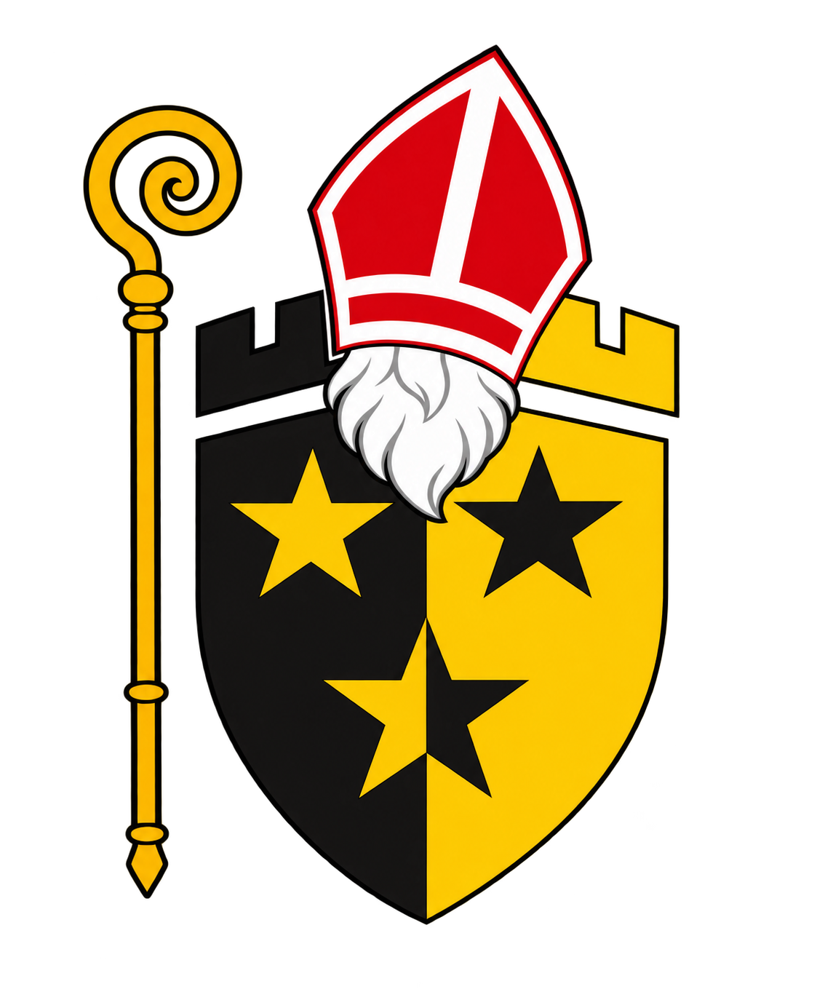

Möchten auch Sie einen Chlausbesuch buchen?
Wenn Sie einen Chlaustermin buchen möchten, füllen Sie bitte die folgenden Schritte aus.
IMPRESSUM
Die Chlausengruppe Engelburg gehört dem Verkehrsverein Engelburg an.
Bitte keine echten Familien- oder Kinderdaten eingeben. Angaben bleiben lokal in diesem Browser, bis die Demo zurückgesetzt oder der Browserspeicher gelöscht wird. Kein Server-Speicher, kein echter Mailversand. Dateien werden nicht hochgeladen.